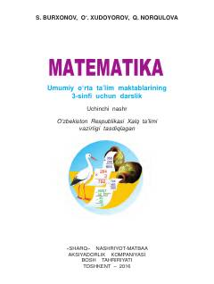

M3Umumiy o'rta ta'lim maktablarining 3-sinfi uchun matematika darsligi.
Mazkur darslik umumiy o'rta ta'lim maktablarining 3-sinf o'quvchilari uchun mo'ljallangan bo'lib, ikki xonali sonlarni qo'shish va ayirish, qavsli ifodalar hamda boshlang'ich matematika qoidalarini o'rgatadi. Kitobda nazariy tushuntirishlar bilan birga amaliy mashqlar, misollar va masalalar keltirilgan.